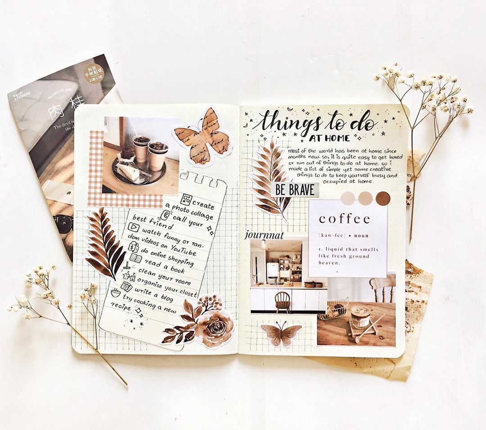

What does creativity have to do with the mind?
The average person has about 60,000 thoughts in a day. A creative act such as crafting can help focus the mind, and has even been compared to meditation due to its calming effects on the brain and body. Even just gardening or sewing releases dopamine, a natural anti-depressant.
Creativity reduces anxiety, depression, and stress… And it can also help you process trauma. Studies have found that writing helps people manage their negative emotions in a productive way, and painting or drawing helps people express trauma or experiences that they find too difficult to put in to words.
Here are a range of creative activities you may be interested to try in your free time:
Redesign a room
Upcycle a piece of furniture
Attend a stand-up comdey show
Visit a museum or exhibit
Make some visual art
Make a time capsule
Practice your photography skills
Try a new recipe
Compose a letter to a friend or family member
Write a short story
Discover your family history
Tour another country with Google Street View
Read a newly released book
Have a "me" time
Begin a watercolour painting

Make a list of movies you want to see
Start a cooking YouTube channel
Make homemade ice cream
Make your own hammock
Take a nature stroll
Compose some music and songs
Clean out the fridge
Start your own bullet journal
Watch a TED talk which interests you
Explore life hacks
Catch up on the news
Play a game
Google yourself
Make yourself a delicious drink
Decorate your shoes